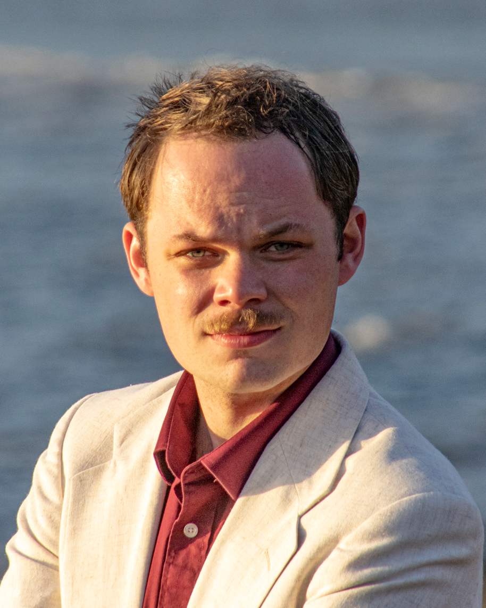

About Me

Welcome! I'm Will, a first-year Ph.D. student at the University of Massachusetts - Amherst working in the Whitaker group. My research focus right now is on the detection of possible young globular clusters using broad and medium-band JWST surveys.
I hope that this website showcases my interests, both personal and professional, in an interesting way. From discussing research to to showcasing a few samplings of my poetry and prose, to displaying some of my astrophotography, this website is meant to be a simulacrum of me.